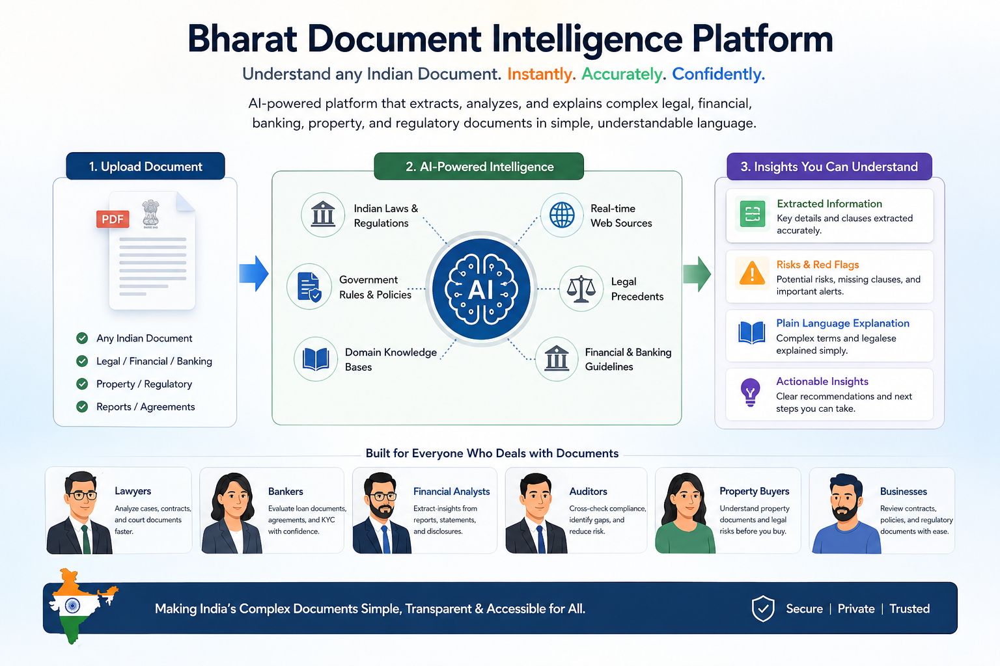
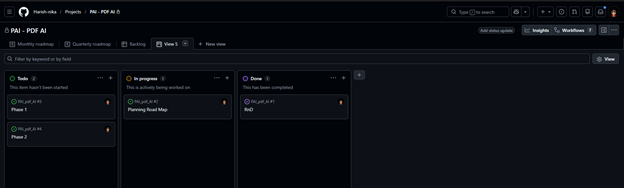
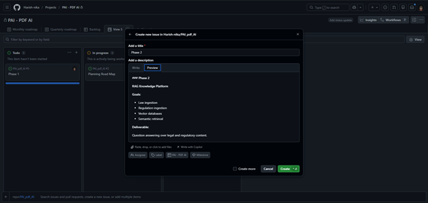

An AI-powered document intelligence platform that helps users understand complex Indian legal and financial documents.
It extracts information, cross-references against Indian laws and regulations via a local vector knowledge base, and presents risk insights
with explicit proof chunks—all running entirely locally for absolute data privacy.
What it does
Millions of Indian documents (Property sale deeds, loan agreements, tax notices) exist only as unstructured PDFs.
PAI PDF AI bridges the gap by transforming these PDFs into actionable information.
By utilizing Retrieval-Augmented Generation (RAG) against domain knowledge, the AI explains technical jargon in plain English/Tamil,
highlights clauses, and detects risks.

PAI PDF AI - Proof-of-Concept Dashboard Interface
Key Features
Semantic Knowledge Search: Matches document clauses against national laws and state rules using Elasticsearch.
Bounding-Box Highlights: Instantly finds the exact paragraph in the PDF where the AI extracted a particular value.
Human Feedback Loop: Analysts can correct AI extractions, and the system instantly embeds and learns these new patterns.
Zero Data Leakage: Utilizes local Ollama LLMs (`llama3`, `nomic-embed-text`) ensuring sensitive documents never leave the machine.
Tech Stack
Layer
Technology
Frontend
React + Vite + Framer Motion
Backend API
FastAPI + Python
Vector Store
Elasticsearch
LLM Integration
Ollama (`llama3` model)
Embeddings
Ollama (`nomic-embed-text`)
PDF Parsing
PyMuPDF (`fitz`), Unstructured
System Architecture Flows
The platform operates in three distinct phases: Setting up the domain knowledge, AI extraction, and interactive Q&A.
These processes ensure answers are always grounded in verifiable rules.
Phase 1: Knowledge Setup (Domain Rules)
graph TD
A[Admin] -->|Upload Laws/Regulations PDF| B(PyMuPDF Parser)
B -->|Extract Text| C{Text Splitter}
C -->|Chunks| D[Ollama Embeddings: nomic-embed-text]
D -->|Vector Vectors| E[(Elasticsearch Vector DB)]
classDef default fill:#1e293b,stroke:#3b82f6,stroke-width:2px,color:#fff;
classDef db fill:#0f172a,stroke:#10b981,stroke-width:2px,color:#fff;
class E db;
Admins upload reference materials (e.g., Transfer of Property Act, RBI circulars).
Documents are parsed, chunked, and embedded into vector space.
Stored in Elasticsearch to act as the Ground Truth for the AI engine.
Phase 2 & 3: PDF Ingestion & Cross-Reference Q&A
graph TD
U[User] -->|Upload Sale Deed PDF| P(Backend Pipeline)
P -->|Extract Key Entities| E[Extracted Clauses]
E -->|Semantic Search| KB[(Elasticsearch DB)]
KB -->|Retrieve Relevant Laws| Ctx[Context Rules]
U -->|Ask Question| Q(Query Processor)
Q -->|Search Text| KB
Ctx --> Prompt
Q --> Prompt
E --> Prompt
Prompt -->|Send to LLM| O[Ollama LLaMA-3]
O -->|Generated Answer| Res[Response + Bounding Box Proof]
Res --> U
classDef default fill:#1e293b,stroke:#8b5cf6,stroke-width:2px,color:#fff;
classDef db fill:#0f172a,stroke:#10b981,stroke-width:2px,color:#fff;
classDef user fill:#334155,stroke:#f59e0b,stroke-width:2px,color:#fff;
class KB db;
class U user;
User uploads an unstructured document. The AI extracts entities and clauses.
Extracted clauses are verified against the Elasticsearch knowledge base.
When the user asks a question, the LLM generates an answer, and the UI highlights the exact source chunks (proof).
GitHub Project Planning & Iterations
I structured the development into structured sprints using GitHub Projects, tracking tasks via issues across the different phases.

Phase 1: Knowledge Setup Tracking tasks for embedding models and Elasticsearch

Phase 2: RAG & Q&A Tracking tasks for Ollama inference and UI proofs
Interactive Animated Architecture Flow
To clearly communicate the complex multi-agent flow of the Bharat Document Intelligence Platform to stakeholders,
I engineered this beautiful, interactive React animation using Vite and Framer Motion.